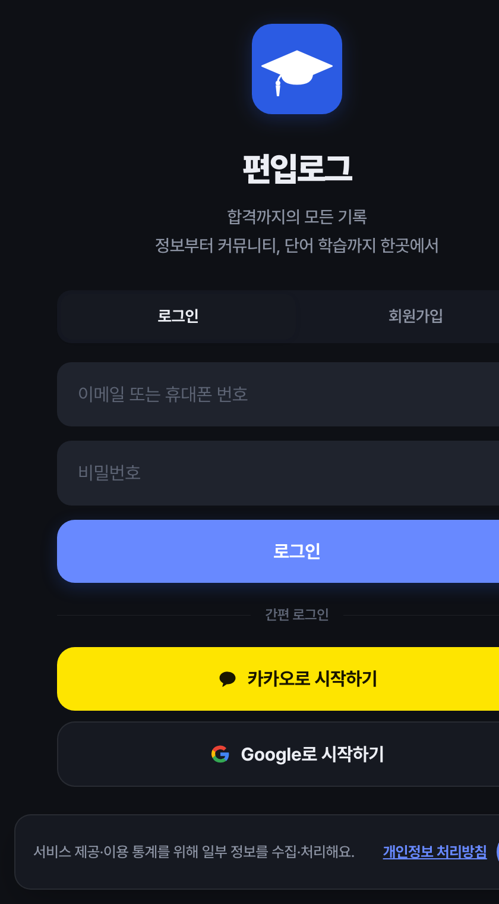

교육 · 커뮤니티
편입로그
PyeonipLog편입 정보는 넘치는데, 믿을 수 있는 데이터가 없었습니다.
실제 경쟁률과 모집요강, 합격 후기 커뮤니티, 그리고 게임처럼 매일 하는 영어 학습까지 — 편입 준비의 모든 과정을 한 앱에 모았습니다.
- 학교별 실시간 경쟁률·모집요강
- 합격 후기 & 익명 커뮤니티
- 게임형 영어 단어·문법 학습
- 간격 반복(SRS) 복습 · 학습 통계
서비스 바로가기 ↗
Live · iOS/Android